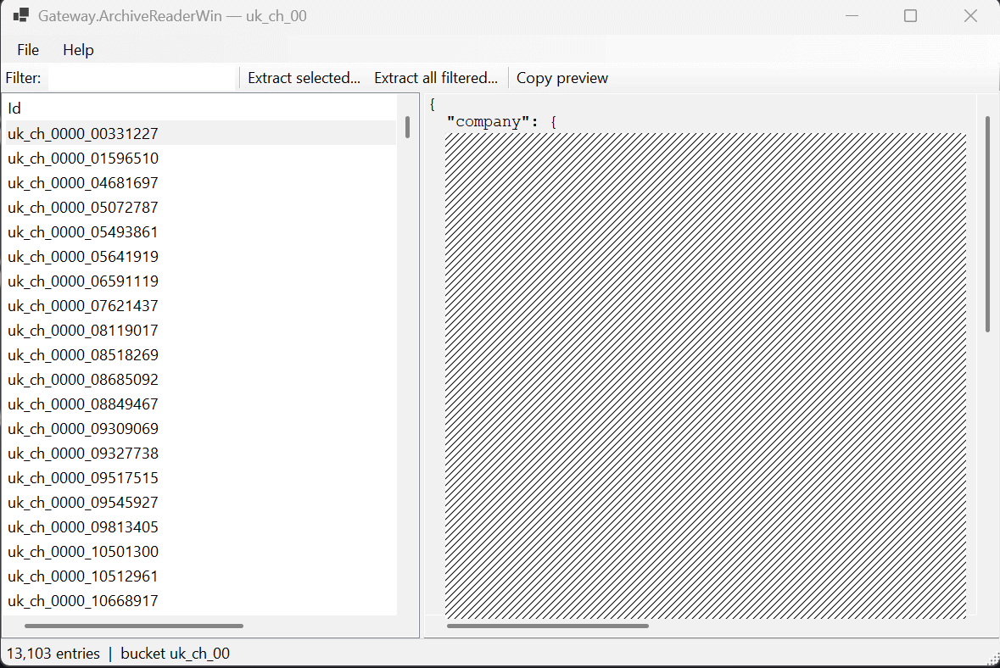

Plugin Purgatory: When Power Tools Become the Bottleneck
I spent hours in "Plugin Purgatory."
I was trying to open a custom archive format using Total Commander, FAR Manager, and Double Commander. I wrestled with their plugins to view and extract the files.
After a few hours of struggle, I just gave up. When a "power tool" becomes a bottleneck of configuration complexity, its value drops to zero.
The Realization
I realized I wasn't solving the problem anymore. I was just fighting the tools. So I closed the managers and went back to start.
15 Minutes Later
I built my own archive viewer, a simple Windows app that does exactly what I need:
- It reads the custom format directly
- A simple list of entries with a JSON preview pane
- Extract selected, extract filtered, or copy preview

The Lesson
We often treat software like a monument we must respect. But as an engineer, your greatest superpower is the ability to replace what isn't working for you.